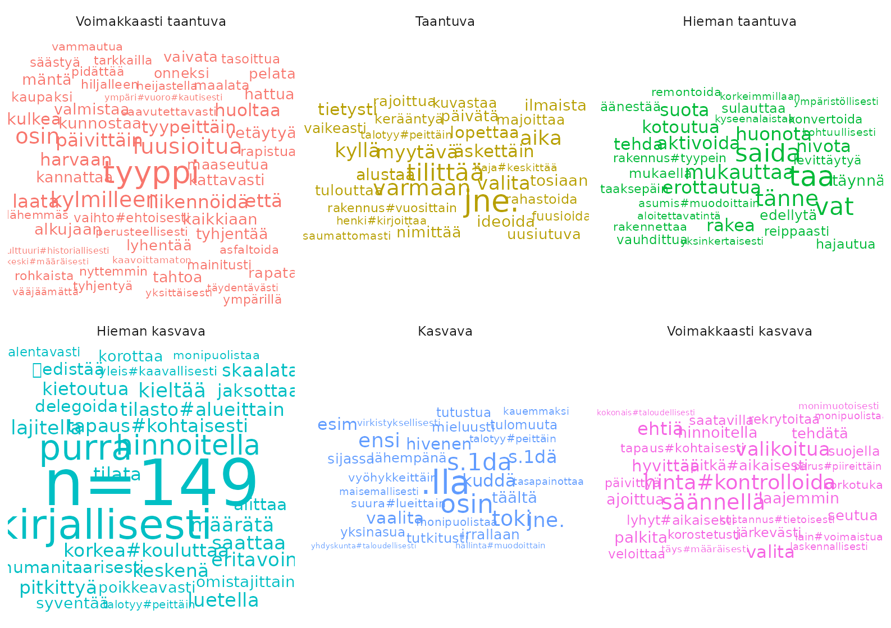

library(rfintext)
# devtools::install_github("StranMax/rfinstats")
library(rfinstats)
library(dplyr)
library(sf)
library(tidytext)
library(ggplot2)
library(stringr)
library(forcats)
library(ggwordcloud)
aspol <- left_join(aspol, taantuvat)
#> Joining with `by = join_by(kunta)`
# suodatettavat <- c("✓", "", "x", "X", "@", "bostad", "\\.")
# pattern <- str_c(suodatettavat, collapse = "|")
aspol <- aspol |> filter(
#!str_detect(LEMMA, pattern),
!str_detect(FEATS, "Foreign=Yes"),
nchar(LEMMA) > 2
)
noun_adj <- aspol |> filter(UPOSTAG %in% c("NOUN", "ADJ"))
verb_adv <- aspol |> filter(UPOSTAG %in% c("VERB", "ADV"))
tf_noun_adj_luokka <- noun_adj |>
filter(!is.na(luokka)) |>
count(luokka, LEMMA, sort = TRUE)
tf_noun_adj_luokka
#> # A tibble: 30,019 × 3
#> luokka LEMMA n
#> <fct> <chr> <int>
#> 1 Voimakkaasti kasvava kaupunki 1120
#> 2 Voimakkaasti taantuva kunta 934
#> 3 Voimakkaasti kasvava asunto 926
#> 4 Voimakkaasti kasvava vuosi 905
#> 5 Kasvava asunto 880
#> 6 Kasvava vuosi 844
#> 7 Kasvava kaupunki 780
#> 8 Kasvava alue 765
#> 9 Kasvava asuminen 750
#> 10 Taantuva kaupunki 748
#> # ℹ 30,009 more rows
noun_adj_sum_per_luokka <- tf_noun_adj_luokka |>
group_by(luokka) |>
summarise(total = sum(n))
noun_adj_sum_per_luokka
#> # A tibble: 6 × 2
#> luokka total
#> <fct> <int>
#> 1 Voimakkaasti taantuva 30641
#> 2 Taantuva 26129
#> 3 Hieman taantuva 26701
#> 4 Hieman kasvava 15768
#> 5 Kasvava 42127
#> 6 Voimakkaasti kasvava 38385
tf_idf_noun_adj <- tf_noun_adj_luokka |>
left_join(noun_adj_sum_per_luokka) |>
bind_tf_idf(LEMMA, luokka, n)
tf_idf_noun_adj %>%
select(-total) %>%
arrange(desc(tf_idf))
#> # A tibble: 30,019 × 6
#> luokka LEMMA n tf idf tf_idf
#> <fct> <chr> <int> <dbl> <dbl> <dbl>
#> 1 Hieman taantuva piwlo 86 0.00322 1.79 0.00577
#> 2 Taantuva kuusamo 72 0.00276 1.79 0.00494
#> 3 Hieman kasvava kanta#kaupunki 144 0.00913 0.405 0.00370
#> 4 Hieman taantuva mikkelinen 55 0.00206 1.79 0.00369
#> 5 Hieman kasvava avainteema 28 0.00178 1.79 0.00318
#> 6 Taantuva kirjaamo@kuusamo.fi 36 0.00138 1.79 0.00247
#> 7 Taantuva toimiala 36 0.00138 1.79 0.00247
#> 8 Voimakkaasti taantuva smf. 42 0.00137 1.79 0.00246
#> 9 Voimakkaasti taantuva luokitus 39 0.00127 1.79 0.00228
#> 10 Voimakkaasti kasvava kaupungin#kanslia 46 0.00120 1.79 0.00215
#> # ℹ 30,009 more rows
tf_idf_noun_adj |>
slice_max(tf_idf, n = 30, by = luokka) |>
ggplot(aes(label = LEMMA, size = tf_idf, colour = luokka)) +
geom_text_wordcloud_area(rm_outside = TRUE, shape = "square", use_richtext = FALSE) +
scale_size_area(max_size = 30) +
theme_minimal() +
facet_wrap(~luokka, nrow = 2)
#> Warning in wordcloud_boxes(data_points = points_valid_first, boxes = boxes, :
#> Some words could not fit on page. They have been removed.
tf_verb_adv_luokka <- verb_adv |>
filter(!is.na(luokka)) |>
count(luokka, LEMMA, sort = TRUE)
tf_verb_adv_luokka
#> # A tibble: 6,754 × 3
#> luokka LEMMA n
#> <fct> <chr> <int>
#> 1 Kasvava myös 498
#> 2 Voimakkaasti kasvava myös 375
#> 3 Voimakkaasti taantuva myös 369
#> 4 Kasvava noin 365
#> 5 Kasvava olla 320
#> 6 Voimakkaasti taantuva tulla 311
#> 7 Voimakkaasti kasvava olla 286
#> 8 Voimakkaasti taantuva olla 280
#> 9 Hieman taantuva myös 279
#> 10 Voimakkaasti kasvava tulla 278
#> # ℹ 6,744 more rows
verb_adv_sum_per_luokka <- tf_verb_adv_luokka |>
group_by(luokka) |>
summarise(total = sum(n))
verb_adv_sum_per_luokka
#> # A tibble: 6 × 2
#> luokka total
#> <fct> <int>
#> 1 Voimakkaasti taantuva 10241
#> 2 Taantuva 7841
#> 3 Hieman taantuva 8792
#> 4 Hieman kasvava 5117
#> 5 Kasvava 14425
#> 6 Voimakkaasti kasvava 13095
tf_idf_verb_adv <- tf_verb_adv_luokka |>
left_join(verb_adv_sum_per_luokka) |>
bind_tf_idf(LEMMA, luokka, n)
tf_idf_verb_adv %>%
select(-total) %>%
arrange(desc(tf_idf))
#> # A tibble: 6,754 × 6
#> luokka LEMMA n tf idf tf_idf
#> <fct> <chr> <int> <dbl> <dbl> <dbl>
#> 1 Hieman kasvava n=149 14 0.00274 1.79 0.00490
#> 2 Hieman kasvava kirjallisesti 12 0.00235 1.79 0.00420
#> 3 Voimakkaasti kasvava hinta#kontrolloida 13 0.000993 1.79 0.00178
#> 4 Hieman kasvava hinnoitella 13 0.00254 0.693 0.00176
#> 5 Hieman kasvava tapaus#kohtaisesti 20 0.00391 0.405 0.00158
#> 6 Hieman kasvava korkea#kouluttaa 4 0.000782 1.79 0.00140
#> 7 Hieman kasvava purra 4 0.000782 1.79 0.00140
#> 8 Hieman kasvava tilasto#alueittain 4 0.000782 1.79 0.00140
#> 9 Voimakkaasti taantuva tyyppi 8 0.000781 1.79 0.00140
#> 10 Voimakkaasti kasvava säännellä 36 0.00275 0.405 0.00111
#> # ℹ 6,744 more rows
tf_idf_verb_adv |>
slice_max(tf_idf, n = 30, by = luokka) |>
ggplot(aes(label = LEMMA, size = tf_idf, colour = luokka)) +
geom_text_wordcloud_area(rm_outside = TRUE, shape = "square", use_richtext = FALSE) +
scale_size_area(max_size = 30) +
theme_minimal() +
facet_wrap(~luokka, nrow = 2)
#> Warning in wordcloud_boxes(data_points = points_valid_first, boxes = boxes, :
#> Some words could not fit on page. They have been removed.